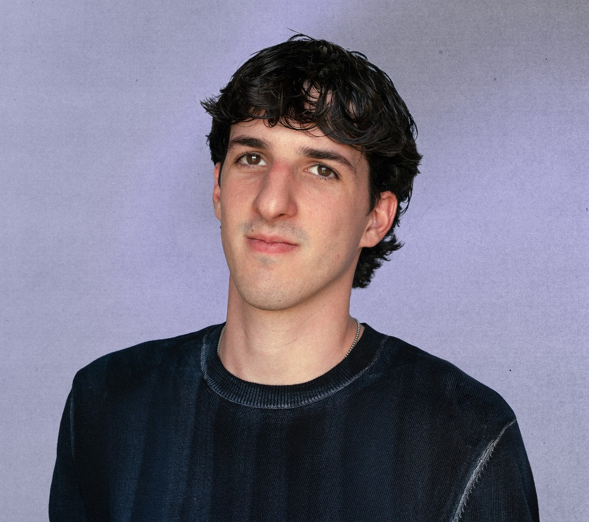

La fotografia è stata la mia prima passione, ma il mio percorso è cambiato davvero quando ho scoperto l’elaborazione digitale delle immagini. Da lì ho iniziato a lavorare su entrambi i fronti, e con il tempo sono riuscito a far comunicare i due mondi.
Ogni progetto per me parte dal contenuto, che sia un brano, un testo o un tema. Mi piace capire prima cosa c’è da raccontare, e solo dopo come raccontarlo, cercando la forma che lo renda chiaro e riconoscibile.
Creatività e attenzione ai dettagli sono i miei punti di forza. Sono una persona disponibile e positiva, e ci tengo a costruire buoni rapporti con le persone con cui lavoro.